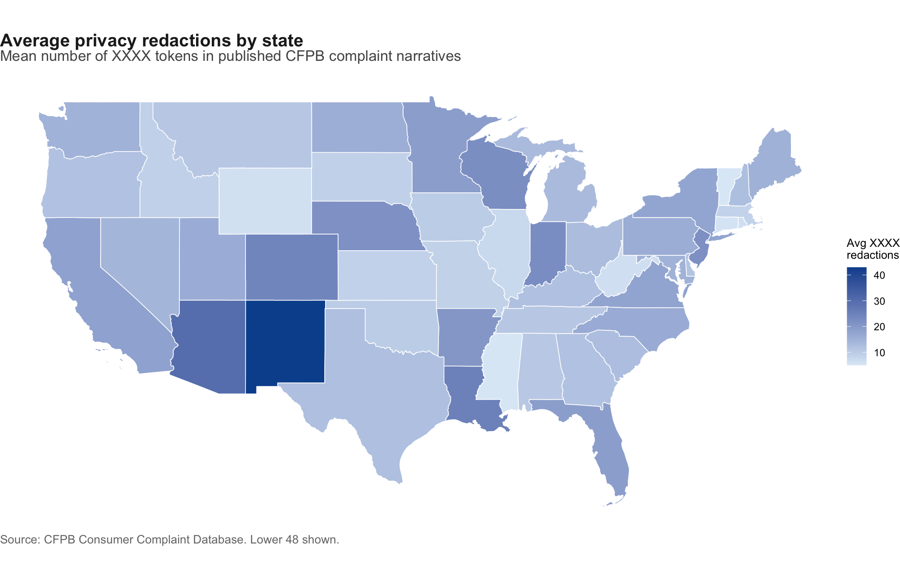

AI Privacy & Text Sanitization Audit
Redaction patterns in CFPB consumer complaint narratives
Motivation
The CFPB publishes real consumer complaints online, but they scrub out personal info first. Names, account numbers, and stuff like that get replaced with XXXX. That is good for privacy, but it also cuts out details you might want if you are analyzing the text or training a model on it.
I wanted to see how far that scrubbing actually goes, so I looked at:
- how long the remaining text is (
complaintLength) - how many
XXXXtokens show up (redactionCount) - which products and states get scrubbed the most
Setup
Data
I pulled the complaint narratives straight from the CFPB site and joined in a simple state-to-region table so I could map the results.
The full database is massive, so I capped it at 10,000 rows with n_max = 10000. That was plenty to see the patterns, and running the whole thing would have taken forever.
Code
options(timeout = 120)
cfpbUrl <- paste0(
"https://www.consumerfinance.gov/data-research/consumer-complaints/search/api/v1/",
"?has_narrative=true&format=csv&no_aggs=true",
"&date_received_min=2024-01-01")
cfpbZipUrl <- "https://files.consumerfinance.gov/ccdb/complaints.csv.zip"
rawComplaints <- tryCatch(
{
read_csv(cfpbUrl, n_max = 10000, show_col_types = FALSE)
},
error = function(e) {
tempZip <- tempfile(fileext = ".zip")
download.file(cfpbZipUrl, tempZip, mode = "wb", quiet = TRUE)
tempDir <- tempdir()
unzip(tempZip, exdir = tempDir)
csvPath <- list.files(tempDir, pattern = "complaints\\.csv$", full.names = TRUE)[1]
read_csv(csvPath, n_max = 50000, show_col_types = FALSE) %>%
filter(!is.na(`Consumer complaint narrative`))
}
)
rawTextData <- rawComplaints %>%
rename(
dateReceived = `Date received`,
product = Product,
subProduct = `Sub-product`,
issue = Issue,
subIssue = `Sub-issue`,
consumerComplaintNarrative = `Consumer complaint narrative`,
companyPublicResponse = `Company public response`,
company = Company,
state = State,
zipCode = `ZIP code`,
tags = Tags,
submittedVia = `Submitted via`,
dateSentToCompany = `Date sent to company`,
companyResponseToConsumer = `Company response to consumer`,
timelyResponse = `Timely response?`,
complaintId = `Complaint ID`) %>%
select(complaintId, dateReceived, product, subProduct, issue,
consumerComplaintNarrative, company, state)Privacy metrics
Code
complaintMetrics <- rawTextData %>%
filter(!is.na(consumerComplaintNarrative), consumerComplaintNarrative != "") %>%
mutate(
complaintLength = nchar(consumerComplaintNarrative),
redactionCount = str_count(consumerComplaintNarrative, "XXXX"),
redactionDensity = redactionCount / pmax(complaintLength, 1))
redactionCutoff <- quantile(complaintMetrics$redactionCount, 0.75, na.rm = TRUE)
highRedactionCases <- complaintMetrics %>%
filter(redactionCount >= redactionCutoff)
complaintWithRegion <- complaintMetrics %>%
left_join(stateMeta, by = c("state" = "stateCode"))
productSummary <- complaintWithRegion %>%
filter(!is.na(product)) %>%
group_by(product) %>%
summarize(
complaintCount = n(),
avgComplaintLength = mean(complaintLength, na.rm = TRUE),
avgRedactionCount = mean(redactionCount, na.rm = TRUE),
avgRedactionDensity = mean(redactionDensity, na.rm = TRUE),
.groups = "drop") %>%
arrange(desc(complaintCount))
stateSummary <- complaintWithRegion %>%
filter(!is.na(state), nchar(state) == 2) %>%
group_by(state, stateName, region) %>%
summarize(
complaintCount = n(),
avgComplaintLength = mean(complaintLength, na.rm = TRUE),
avgRedactionCount = mean(redactionCount, na.rm = TRUE),
.groups = "drop")Where is scrubbing heaviest?
I started with a US map. Darker states have more XXXX tokens on average.
Code
lower48 <- state.name[!state.name %in% c("Alaska", "Hawaii")]
statesMap <- us_states() %>%
filter(name %in% lower48) %>%
left_join(stateSummary, by = c("state_abbr" = "state"))
redactionMap <- ggplot(statesMap) +
geom_sf(aes(fill = avgRedactionCount), color = "white", linewidth = 0.3) +
scale_fill_gradient(
low = "#deebf7",
high = "#08519c",
na.value = "#f0f0f0",
name = "Avg XXXX\nredactions"
) +
labs(title = "Average privacy redactions by state", subtitle = "Mean number of XXXX tokens in published CFPB complaint narratives", caption = "Source: CFPB Consumer Complaint Database. Lower 48 shown.") +
theme_void(base_size = 13) +
theme(
plot.title = element_text(face = "bold", color = "#222222"),
plot.subtitle = element_text(color = "#555555", margin = margin(b = 10)),
plot.caption = element_text(color = "#777777", hjust = 0),
legend.title = element_text(size = 10),
legend.text = element_text(size = 9),
plot.background = element_rect(fill = "white", color = NA),
panel.background = element_rect(fill = "white", color = NA))
redactionMap
If a state is darker, people there were probably writing more personal details into their complaints, so CFPB had to blank more of it out. Lighter does not mean “more private.” It just means those stories did not need as many placeholders. Looking at this, the state differences are real, but they are not as big as what you see when you break it down by product.
Which products need the most scrubbing?
Product type matters way more than location. Here are the most common categories ranked by average XXXX count.
Code
topProductBars <- productSummary %>%
slice_max(order_by = complaintCount, n = 8) %>%
mutate(productShort = str_wrap(product, width = 28))
productPlot <- ggplot(
topProductBars,
aes(
x = reorder(productShort, avgRedactionCount),
y = avgRedactionCount,
text = paste0(
product, "\n",
"Avg redactions: ", round(avgRedactionCount, 1), "\n",
"Avg length: ", comma(round(avgComplaintLength)), " characters\n",
"Narratives: ", comma(complaintCount)))) +
geom_col(fill = "#2171b5", width = 0.72) +
coord_flip() +
labs(title = "Products with the heaviest privacy scrubbing", subtitle = "Average XXXX redactions among the most common complaint categories", x = NULL, y = "Average number of XXXX redactions per narrative", caption = "Source: CFPB Consumer Complaint Database") +
theme_minimal(base_size = 13) +
theme(
plot.title = element_text(face = "bold", color = "#222222"),
plot.subtitle = element_text(color = "#555555"),
plot.caption = element_text(color = "#777777", hjust = 0),
panel.grid.major.y = element_blank(),
panel.grid.minor = element_blank(),
axis.text = element_text(color = "#333333"),
plot.background = element_rect(fill = "white", color = NA),
panel.background = element_rect(fill = "white", color = NA))
ggplotly(productPlot, tooltip = "text") %>%
layout(
paper_bgcolor = "white",
plot_bgcolor = "white",
font = list(color = "#222222"),
margin = list(l = 10, r = 20, t = 60, b = 40)
)Do longer stories get scrubbed more?
I figured longer complaints would get scrubbed more, since there is just more text to find personal info in. This plot checks that for the main products.
Code
scatterData <- productSummary %>%
slice_max(order_by = complaintCount, n = 10)
lengthPlot <- ggplot(
scatterData,
aes(
x = avgComplaintLength,
y = avgRedactionCount,
size = complaintCount,
text = paste0(
product, "\n",
"Avg length: ", comma(round(avgComplaintLength)), "\n",
"Avg redactions: ", round(avgRedactionCount, 1), "\n",
"Narratives: ", comma(complaintCount)))) +
geom_point(color = "#08519c", alpha = 0.85) +
scale_size_continuous(range = c(4, 14), labels = comma, name = "Narratives") +
scale_x_continuous(labels = comma) +
labs(title = "Longer narratives usually carry more redactions", subtitle = "Each point is a product category. Bubble size is complaint volume.", x = "Average narrative length (characters)", y = "Average XXXX redactions", caption = "Source: CFPB Consumer Complaint Database") +
theme_minimal(base_size = 13) +
theme(
plot.title = element_text(face = "bold", color = "#222222"),
plot.subtitle = element_text(color = "#555555"),
plot.caption = element_text(color = "#777777", hjust = 0),
panel.grid.minor = element_blank(),
axis.text = element_text(color = "#333333"),
plot.background = element_rect(fill = "white", color = NA),
panel.background = element_rect(fill = "white", color = NA),
legend.position = "right")
ggplotly(lengthPlot, tooltip = "text") %>%
layout(
paper_bgcolor = "white",
plot_bgcolor = "white",
font = list(color = "#222222"))High-redaction edge cases
I also looked at the high end. Anything at or above the 75th percentile of XXXX counts is where scrubbing hits hardest, and the leftover text is the least useful.
Code
# A tibble: 1 × 4
totalNarratives highRedactionNarratives redactionCutoff shareHighRedaction
<int> <int> <dbl> <dbl>
1 10000 2562 15 0.256Interpretation
A few things jumped out:
Product matters more than geography. The map is interesting, but the product chart tells a clearer story. Categories where people write about accounts, dates, and personal timelines end up with a lot more
XXXX.Longer stories get scrubbed more. That makes sense for privacy, but it is annoying for text analysis because names and dates are often the useful parts.
The extreme cases are worth checking. If I were testing a redaction tool, I would sample the top quartile first. Those are the ones where you can tell if it is scrubbing too little or wiping out the whole story.
Overall, keeping text readable helps with analysis, and heavy redaction helps with privacy. Tracking length, redaction count, and density together is a simple way to see when the scrubbing starts to hurt the data.
AI USAGE
This analysis was supported by Copilot to summarize the finding and suggest visualizations. I wrote the code and interpreted the results, but Copilot helped me with some of the text and charting ideas.